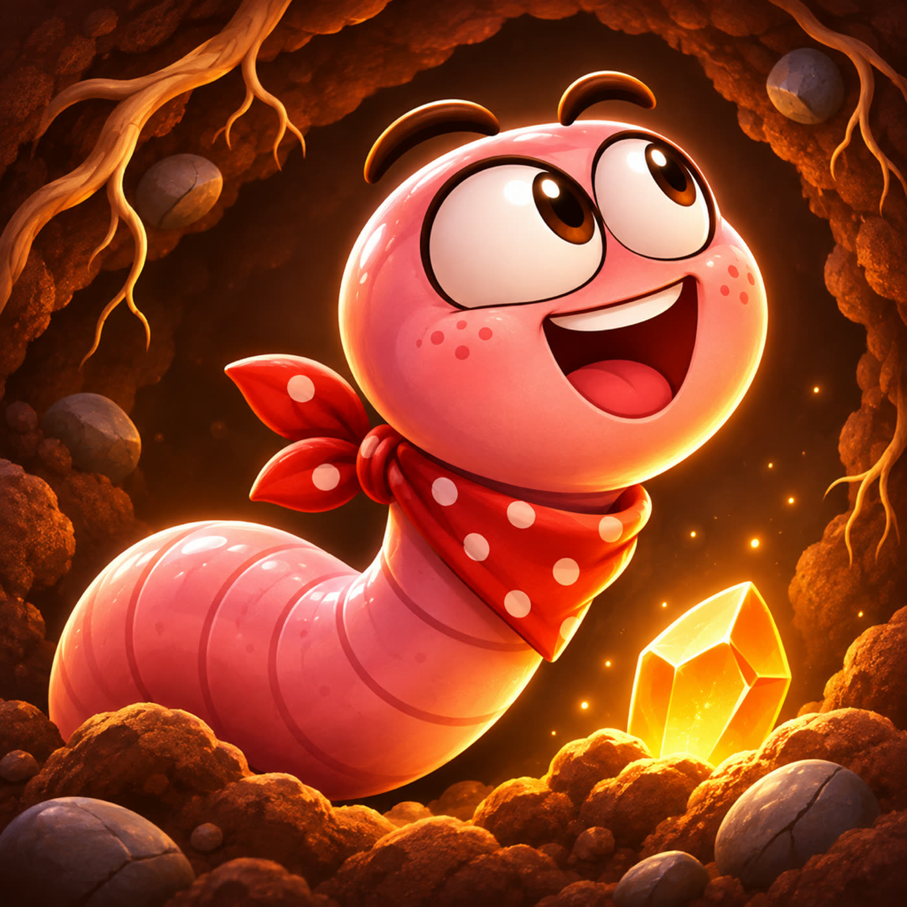
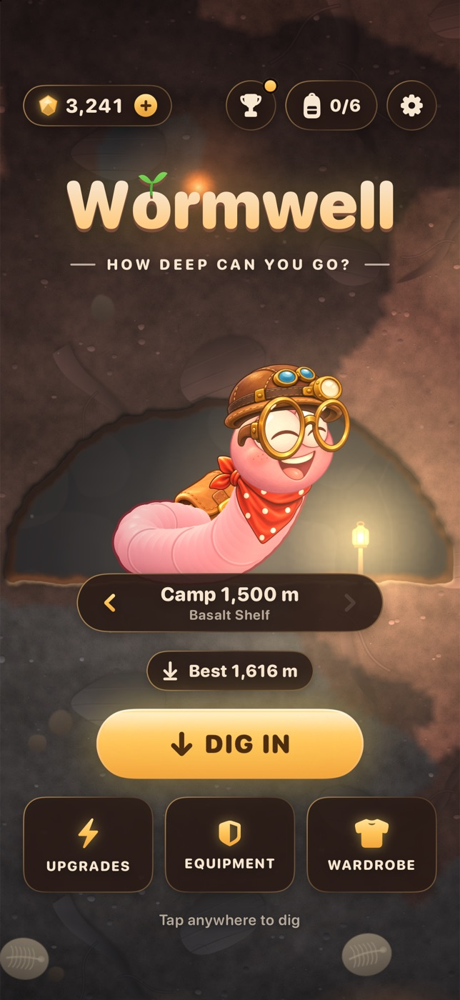
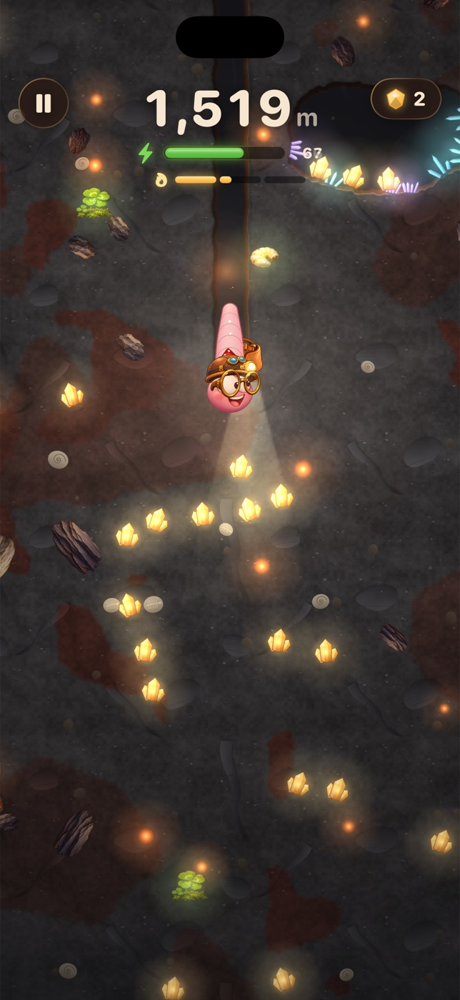
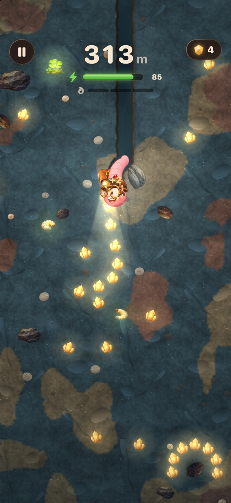
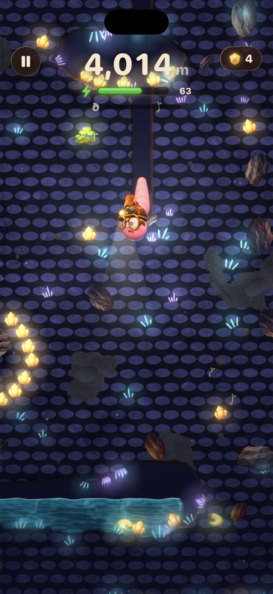
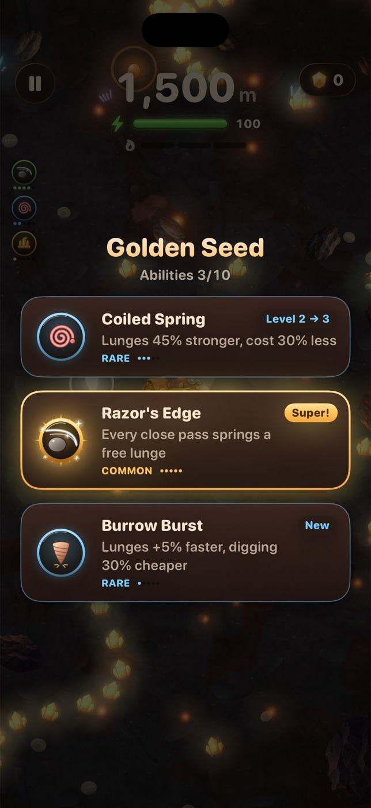
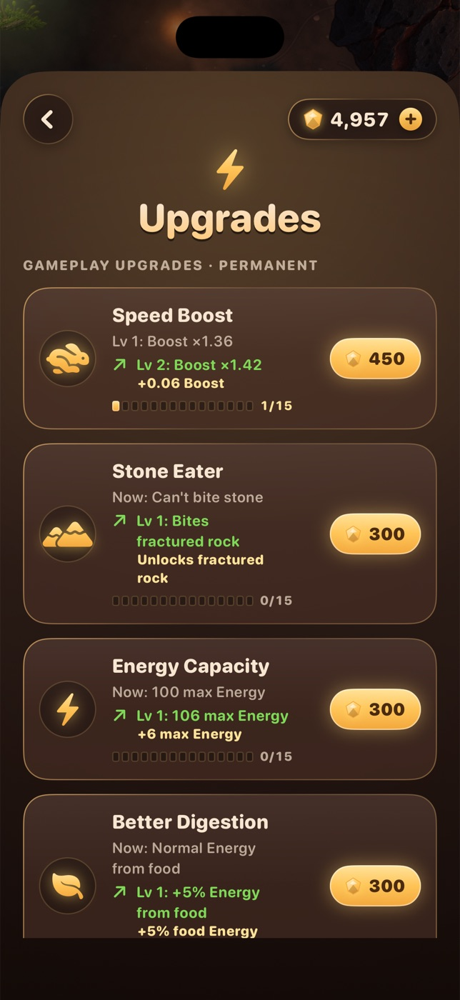
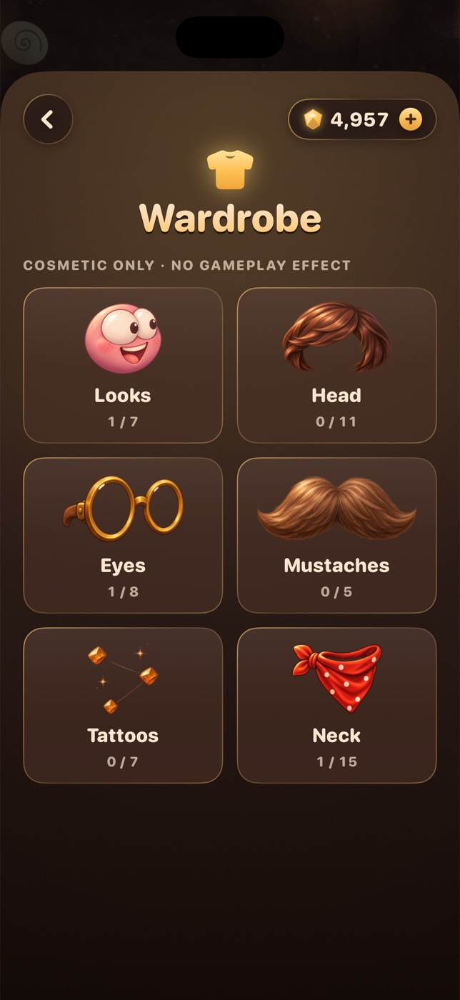

Smooth, not snake-like
The worm turns in a soft arc in any of 360 degrees. No grid, no sharp corners, no stick to hunt for.
One-finger digging adventure · iPhone, iPad & Mac
Guide a tiny worm through a living underground world. Carve tunnels, eat to keep your energy up, slip past stone and lava, and find out what waits below the next layer.

One finger · Anywhere on screen
Put a finger down anywhere and drag the way you want to go. Let go and the worm keeps crawling. Swipe sharply to lunge. Every metre of soil costs energy, and food is the only way to get it back.
Try it: drag inside the soil to dig.
On Mac: drag with the mouse or trackpad, or steer with ← ↑ → ↓. Hold Space and release to lunge.
Drag to steer
The worm turns in a soft arc in any of 360 degrees. No grid, no sharp corners, no stick to hunt for.
A sharp swipe throws the worm forward. A fast one cracks small stones. It costs more than crawling, so pick your moment.
Sprouts, grubs and mushrooms keep you going. Take the short risky way or the long safe one. The run ends when energy runs out.
Real gameplay







Wonder below
The deeper you go, the stranger it gets. Each zone has its own soil, light and dangers. Learn to read the colours, follow the soft pockets and save energy for what lies below.
Soft earth, roots and the first stones.
Terracotta, ochre and boulders to steer around.
Wet slate and currents that pull you along.
Luminous fungi in huge hollow caves.
Ash rock, ember light and the first lava.
Cold graphite and layer after layer of stone.
Dark slag split by long glowing veins.
Blue and violet crystal over wide voids.
Old rose-dark rock, older than anything above.
Soft chalk, bones and vaulted chambers.
Rust and ore, rich in Amber, threaded with stone.
Thick silt, flooded shafts and strong currents.
Fast but costly black glass.
Warm red pulsing light. It never ends.
Between runs
One run will not reach the bottom. Pass a camp and your next run can start there. Spend the Amber you find on upgrades, adapt to each zone and push the record a little further.
Lantern-lit domes deep below. Reach one and pick it as your next starting point.
Speed, digestion, capacity, food sense, stone eating and more, each with 15 levels.
Golden Seeds offer three cards. Level an ability to 5 and it becomes a super form.
Pressure builds in each deep zone. Adapt to it, then go further.
A helmet and headlamp for the dark, plus quick items for when a run gets tight.
Hats, hair, glasses, mustaches, tattoos and scarves. Looks only, never an advantage.
Built with respect
Depth is the score and everything that helps you dig deeper can be earned by playing. Game Center is optional. Amber packs exist for players who want a head start.